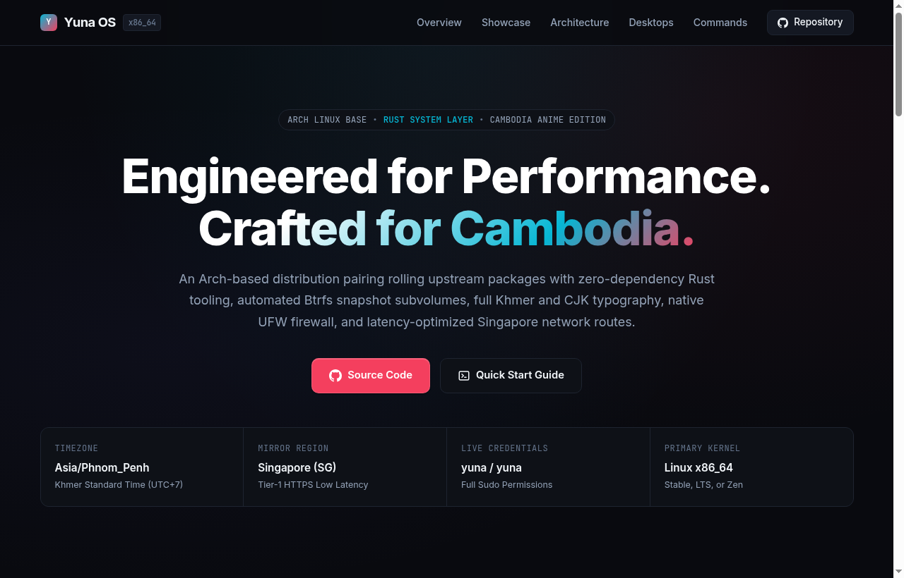
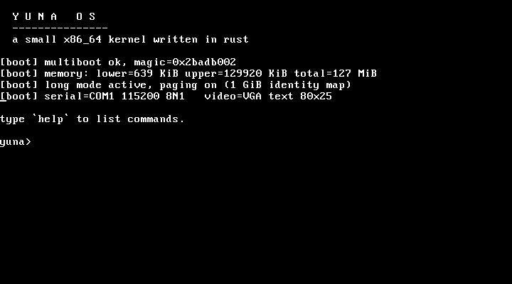

An Arch-based distribution pairing rolling upstream packages with zero-dependency Rust tooling, automated Btrfs snapshot subvolumes, full Khmer and CJK typography, native UFW firewall, and latency-optimized Singapore network routes.
Live medium web layout, mascot ASCII artwork, and low-level kernel console.

⠀⠀⠀⠀⠀⠀⠀⠀⠀⠀⠀⠀⠀⠀⣾⣿⣿⣿⣿⣷⢸⣿⣿⡜⢯⣷⡌⡻⣿⣿⣿⣆⢈⠻⠿⢿⣿⣿⣿⣿⣿⣿⣷⣦⣤⣀⠀⠀⠀⠀⠀⠀⠀⠀⠀⠀⠀⠀⠀⠀⠀⠀⠀⠀
⠀⠀⠀⠀⠀⠀⠀⠀⠀⠀⠀⠀⡁⢳⣿⣿⣿⣿⣿⣿⡜⣿⣿⣧⢀⢻⣷⠰⠈⢿⣿⣿⣧⢣⠉⠑⠪⢙⠿⠿⠿⠿⠿⠿⠿⠋⠁⠀⠀⠀⠀⠀⠀⠀⠀⠀⠀⠀⠀⠀⠀⠀⠀⠀
⠀⠀⠀⠀⠀⠀⠀⠀⠀⠀⢀⣱⡇⡞⣿⣿⣿⣿⣿⣿⡇⣿⣿⡏⡄⣧⠹⡇⠧⠈⢻⣿⣿⡇⢧⢢⠀⠀⠑⠀⠀⠀⠀⠀⠀⠀⠀⠀⠀⠀⠀⠀⠀⠀⠀⠀⠀⠀⠀⠀⠀⠀⠀⠀⠀
⠀⠀⠀⠀⠀⠀⠀⠀⠀⠀⢸⣿⣇⢃⢿⣿⣿⣿⣿⣿⣷⣿⣿⠇⢃⣡⣤⡹⠐⣿⣀⢻⣿⣿⢸⡎⠳⡄⠀⠀⠀⠀⠀⠀⠀⠀⠀⠀⠀⠀
⠀⠀⠀⠀⠀⠀⠀⠀⠀⠈⣾⣿⣿⠘⡸⣿⣿⣿⣿⣿⣿⣿⡿⣰⣿⣿⢟⡷⠈⠋⠃⠎⢿⣿⡏⣿⠀⠘⢆⠀⠀⠀⠀⠀
⠀⠀⠀⠀⠀⠀⠀⠀⠀⡐⢹⣿⣿⡐⢡⢹⣿⣿⣿⣿⡏⣿⢣⣿⣿⡑⠁⠔⠀⠉⠉⠢⡘⣿⡇⣿⡇⠀⡀⠡⡀⠀⠀⠀⠀⠀⠀⠀⠀
⠀⠀⠀⠀⠀⠀⠀⠀⠀⡇⠘⣿⣿⣇⠇⢣⢻⣿⣿⣿⡇⢇⣾⣿⣿⡆⢸⣤⡀⠚⢂⠀⢡⢿⡇⣿⡇⠀⢿⠀⠀⠄⠀⠀⠀
⠀⠀⠀⠀⠀⠀⠀⠀⠀⣿⠠⠹⣿⣿⡘⣆⢣⠻⣿⣿⢈⣾⣿⣿⣿⣶⣸⣏⢀⣬⣋⡼⣠⢸⢹⣿⡇⢠⣼⠙⡄⠀⠀⠀⠀⠀
⠀⠀⠀⠀⠀⠀⠀⠀⠀⢹⡇⠁⠹⣿⣇⠹⡃⠃⠙⡇⠘⢿⣿⣿⣿⣿⣿⣏⣓⣉⣭⣴⣿⠘⢸⣿⠁⠘⠋⠀⠹⠄⠀⠀⠀⠀⠀⠀⠀⠀⠀⠀⠀⠀⠀⠀
⠀⠀⠀⠀⠀⠀⠀⠀⠀⠈⢷⠀⠀⠈⢿⣇⠂⣷⠄⠐⠀⠘⣿⣿⣿⣿⣿⣿⣿⣿⣿⣿⣿⢠⢸⡏⠀⢀⣠⣴⣾⣿⣶⣄⠀⠀⠀⠀⠀⠀⠀⠀⠀⠀⠀⠀⠀
⠀⠀⠀⠀⠀⠀⠀⠀⠀⠀⠈⢆⠀⠀⠀⠙⠆⠈⠢⠲⠥⣰⣿⣿⣿⣿⣿⣿⣿⣿⣿⣿⣷⡞⣸⠁⠀⢸⣿⣿⣿⣿⣿⣿⡆⠀⠀⠀⠀
⠀⠀⠀⠀⠀⠀⠀⠀⠀⠀⠀⠀⠀⠀⠀⠀⠀⠀⠀⢶⣿⣿⣿⣿⣿⣿⣿⣿⣿⣿⣿⣿⠟⠄⠃⠀⠀⠘⣿⣿⣿⣿⣿⣿⣿⠀⠀⠀⠀
⠀⠀⠀⠀⠀⠀⠀⠀⠀⠀⠀⠀⠀⠀⠀⠀⠀⠀⠀⠀⠙⢿⣿⣿⣿⣿⡏⠹⣿⣿⡿⠫⠊⠀⠀⠀⣶⠀⢻⣿⣿⣿⣿⡿⡇⠀⠀⠀⠀⠀⠀⠀⠀⠀⠀⠀
⠀⠀⠀⠀⠀⠀⠀⠀⠀⠀⠀⠀⠀⠀⠀⠀⠀⠀⠀⠀⠀⠀⠈⠙⠛⠻⠿⠿⠿⢋⠀⠀⠀⠀⢀⣼⣿⡆⠈⣿⣿⣿⡟⣱⡷⠀⠀⠀⠀⠀⠀⠀⠀
⠀⠀⠀⠀⠀⠀⠀⠀⠀⠀⠀⠀⠀⠀⠀⠀⠀⠀⠀⠀⠀⠀⠀⠀⢁⣁⡀⠨⣛⠿⠶⠄⢀⣠⣾⣿⣿⣷⠀⢹⣿⡟⣴⠈⢃⣶⠔⠀⠀⠀⠀⠀⠀⠀⠀⠀⠀⠀⠀⠀⠀⠀⠀⠀
⠀⠀⠀⠀⠀⠀⠀⠀⠀⠀⠀⠀⠀⠀⠀⠀⠀⠀⠀⠀⠀⠀⠀⠀⣾⣿⣿⡄⢸⣿⣿⣿⣿⣿⣿⣿⣿⣿⡄⠈⣿⣿⡿⠀⡀⣿⣷⠀⠀⠀⠀⠀⠀⠀⠀⠀⠀⠀⠀⠀⠀⠀⠀⠀⠀
⠀⠀⠀⠀⠀⠀⠀⠀⠀⠀⠀⠀⠀⠀⠀⠀⠀⠀⠀⠀⠀⠀⠀⠀⢙⠻⣿⣿⢀⠙⠻⠿⣿⣿⣿⣿⣿⣿⡇⠁⣿⠟⡀⠈⣧⢰⣿⠆⠀⠀⠀⠀⠀⠀⠀⠀⠀⠀⠀⠀⠀⠀⠀⠀⠀
⠀⠀⠀⠀⠀⠀⠀⠀⠀⠀⠀⠀⠀⠀⠀⠀⠀⠀⠀⠀⠀⠀⠀⠀⠈⠿⠴⠮⣥⠻⢧⣤⣄⣀⡉⢩⣭⣍⣃⣀⣩⠎⢀⣼⠉⣼⡯⠀⠀⠀⠀⠀⠀⠀⠀⠀⠀⠀⠀⠀⠀⠀⠀⠀⠀
⠀⠀⠀⠀⠀⠀⠀⠀⠀⠀⠀⠀⠀⠀⠀⠀⠀⠀⠀⠀⠀⠀⠀⠀⠀⠑⠁⣛⠓⢒⣒⣢⡭⢁⡈⠿⠿⠟⠹⠛⠁⠀⠀⠀⠰⠃⠂⠀⠀⠀

Direct VGA framebuffer output (80x25 text mode) rendered by kernel/src/vga.rs
Every layer optimized for speed, reliability, and security without bloat.
Pre-configured mirrorlist targeting Singapore HTTPS mirrors for the fastest ping, package downloads, and updates in Southeast Asia.
Complete Unicode script coverage out of the box. Native rendering for Khmer, Japanese CJK characters, emojis, and high-legibility console bitmap fonts.
Perimeter protection via UFW (Uncomplicated Firewall) with systemd presets, CA-certificates root bundle, OpenSSL, GnuTLS, curl, and wget.
Automated subvolume layout with @ and @home, transparent zstd compression, Flash-Friendly File System (F2FS) for SSDs, and LUKS2 disk encryption.
Independent Rust utilities compiled directly to optimized native binaries without runtime bloat: yunainstall, yuna-fetch, and yuna-wifi.
Full support for official Arch Linux kernel flavors with automatic DKMS module rebuilds for proprietary GPU drivers, plus our bare-metal x86_64 kernel.
Select your desired desktop environment during installation.
| Profile | Config Flag | Display Manager | Core Stack & Packages |
|---|---|---|---|
| KDE Plasma | desktop=kde |
SDDM | Plasma 6, Dolphin, Konsole, Ark, Spectacle, Wayland session |
| Xfce | desktop=xfce |
LightDM | Lightweight Xfce 4, Thunar, Whisker Menu, xfwm4, xfce4-panel |
| Hyprland | desktop=hyprland |
Greetd (tuigreet) | Wayland dynamic tiling compositor, Waybar, Wofi, Kitty, JetBrains Mono |
| GNOME | desktop=gnome |
GDM | GNOME Shell, Nautilus, GNOME Tweaks, gesture navigation |
| Sway | desktop=sway |
Greetd (tuigreet) | i3-compatible Wayland tiling window manager, Foot terminal, Waybar |
| Cinnamon | desktop=cinnamon |
LightDM | Traditional panel desktop, Nemo file manager, modern applets |
| Console Only | desktop=none |
None (TTY) | Minimal rescue or server setup with fastfetch & yuna utilities |
Execute from the live terminal shell or run non-interactively.